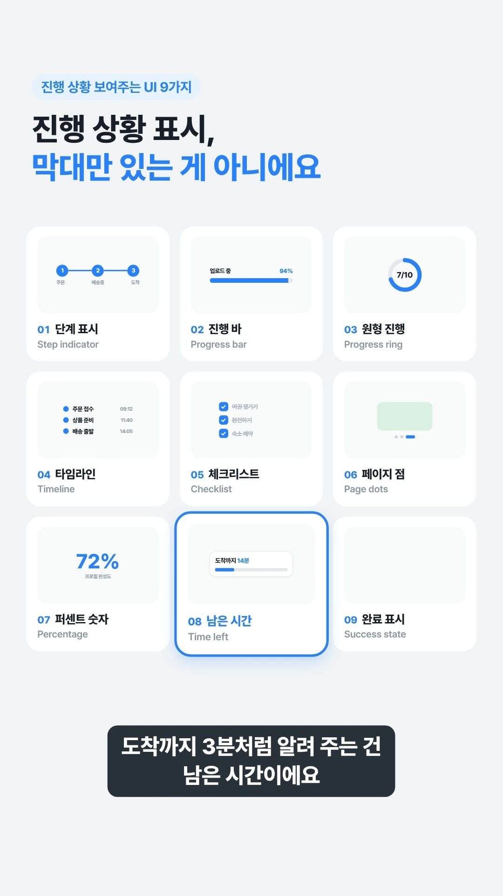

테크 · 릴스 · 2026-11-23
진행 상황을 보여주는 UI 9가지와 그 이름
진행 상황 표시는 진행 바 외에도 단계 표시, 타임라인, 원형 진행, 남은 시간, 완료 표시 등 여러 형태가 있으며, AI에게 디자인을 요청할 때 이 이름으로 말하면 좋다는 내용이다.

- 진행 상황을 보여주는 UI는 단계 표시, 진행 바, 원형 진행, 타임라인, 체크리스트, 페이지 점, 퍼센트 숫자, 남은 시간, 완료 표시의 9가지로 정리된다.
- 배송 조회에서 주문, 배송 중, 도착처럼 1, 2, 3으로 나뉜 것은 단계 표시(Step indicator)다.
- 몇 시에 무엇이 됐는지 시간순으로 적힌 것은 타임라인(Timeline)이다.
- 동그랗게 차오르는 형태는 원형 진행(Progress ring)이다.
- '도착까지 3분'처럼 알려 주는 것은 남은 시간(Time left)이다.
- 끝났을 때 체크가 뜨는 것은 완료 표시(Success state)다.
- AI에게 UI 작업을 시킬 때 이 이름들로 말해 보라고 권한다.